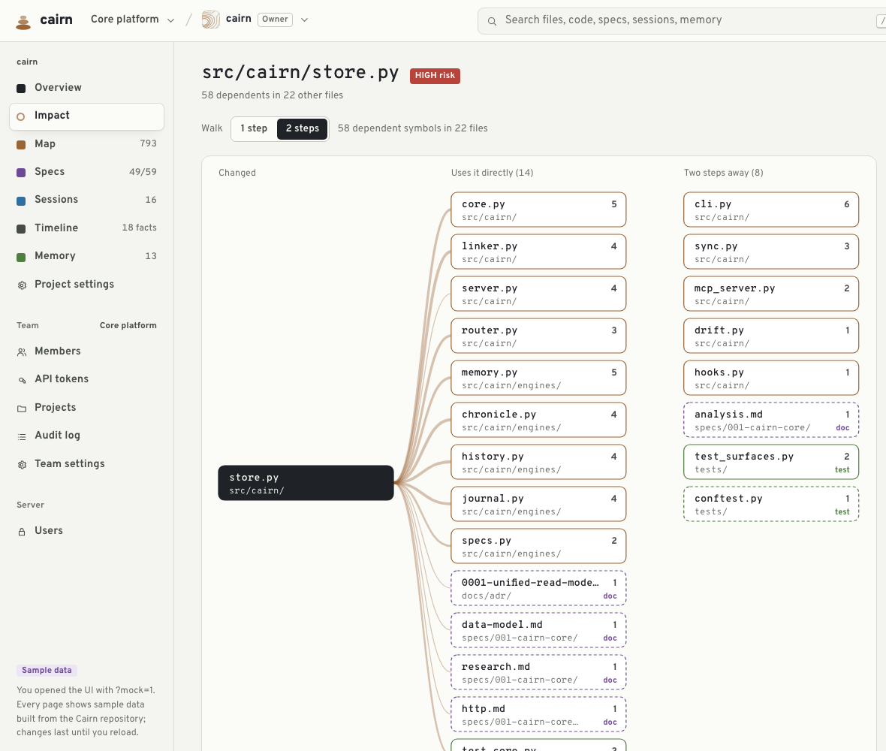
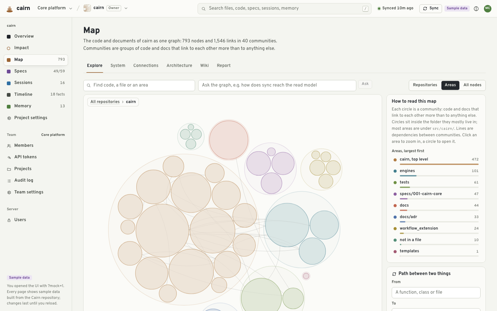
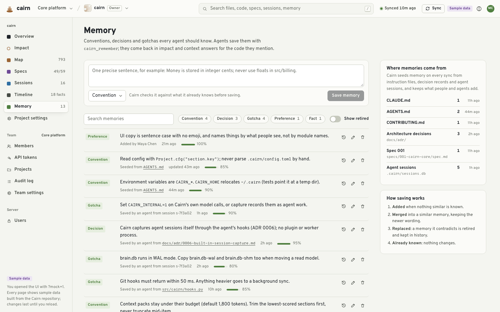

agent session · cairn repository
›
● planning the edit…
What breaks if I
change this?
src/cairn/engines/graph/extract.py
0
lines in one file
406,492 bytes, about 101,600 tokens at 4 characters per token. Reading it, its callers and its history is the slow way to learn what a change touches.
One call over MCP
Coding agent
any MCP client
cairn mcp
one MCP server
built on this machine · no API key · no server to run
## Context: change how graph/extract.py records source locations
EXTRACTED: read from a source [kind:key]: citation
Budget used
0
of a 1,200-token budget
The pack
1,192 tokens
extract.py alone
≈ 101,600 tokens
Same scale. The pack cites the file instead of copying it, and every pack's size is logged next to the size of the files behind it.
src/cairn/engines/graph/extract.py · sketch of the edit
Dependents to check
Memory layer
Next session · start
Session brief
[convention]
Source locations from graph/extract.py are line ranges, never a single line.
Active work
src/cairn/engines/graph/extract.py: risk MEDIUM, 3 dependents
cairn_session_search
(query=
"source location end line"
)
Source location stores a single line only, no end-line field
[obs:1188] · an earlier session
Next: cairn_session_timeline for what happened around it, then cairn_session_observations for full details
search → timeline → details
Deterministic first
Every answer above is computed, not generated.
tree-sitter ASTs
git history
spec files
session logs
One SQLite read model in
.cairn/
. Works offline, with no API key.
Optional: a model enriches
fast
Haiku · summaries
balanced
Sonnet · extract
deep
Opus · judgement
It never gates an answer.
cairn ui



Impact
the same answers on one page · sample data
cairn
Institutional memory for coding agents.
$
uv tool install --python 3.12 cairn-brain
$
cd your-repo && cairn
github.com/Shashank2577/cairn
cairn
· how it works
Ask
Layers
Pack
Edit
Remember
Local